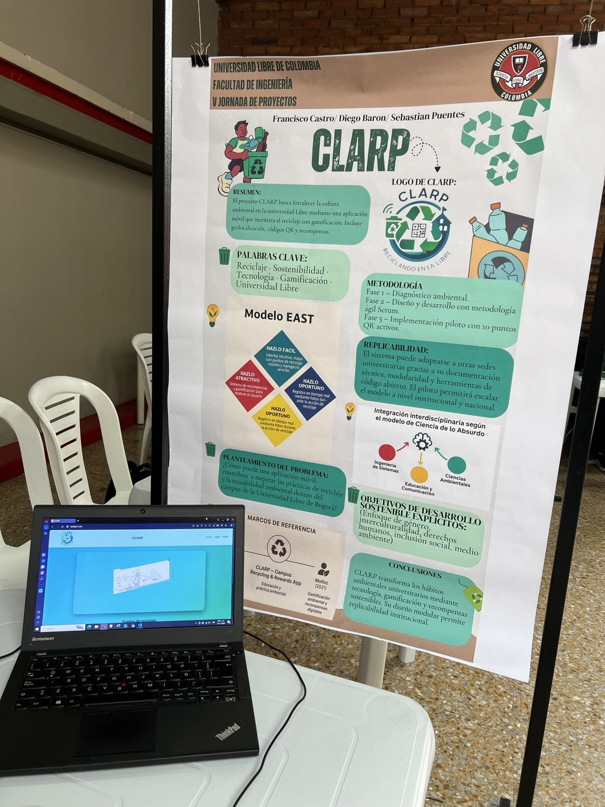

01 / SOSTENIBILIDAD
APLICACIÓN UNIVERSITARIA
CLARP
Reciclaje, participación y recompensas.
CLARP es una propuesta de aplicación universitaria orientada a incentivar el reciclaje mediante la ubicación de puntos de recolección, la verificación de actividades con códigos QR y un sistema de puntos canjeables por beneficios institucionales.
OBJETIVO
Promover hábitos sostenibles dentro de la comunidad universitaria.
ENFOQUE TÉCNICO
Aplicación web, verificación de actividades y gestión de recompensas.